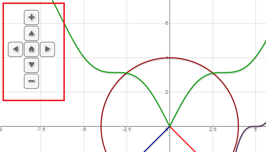

View on GitHub
Jquery.flot.navigationControl.js
Flot plugin that adds some navigation controls on top of the canvas layer to allow users pan or zoom the graph. This is even more helpful for the touch screen users.
Download this project as a .zip file
Download this project as a tar.gz file
Online demo:
Demo 1
Demo 2
Demo 3 (Basic usage)
Screenshot:
